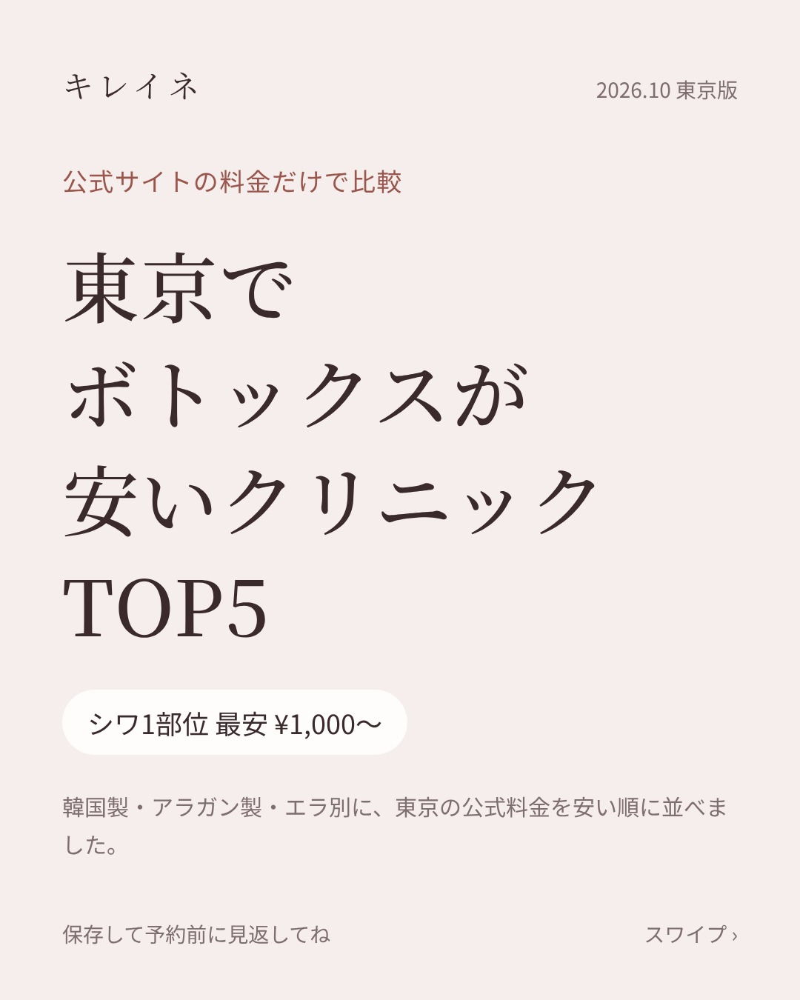
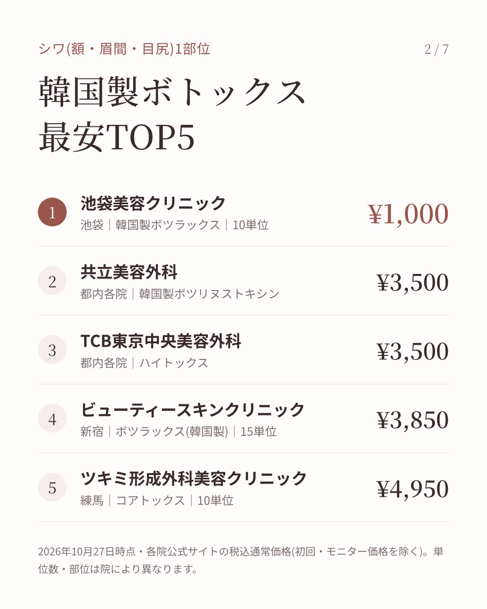
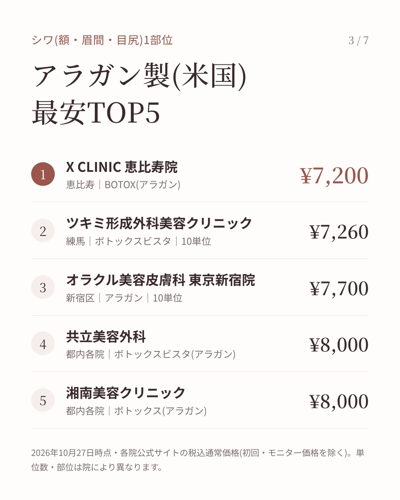
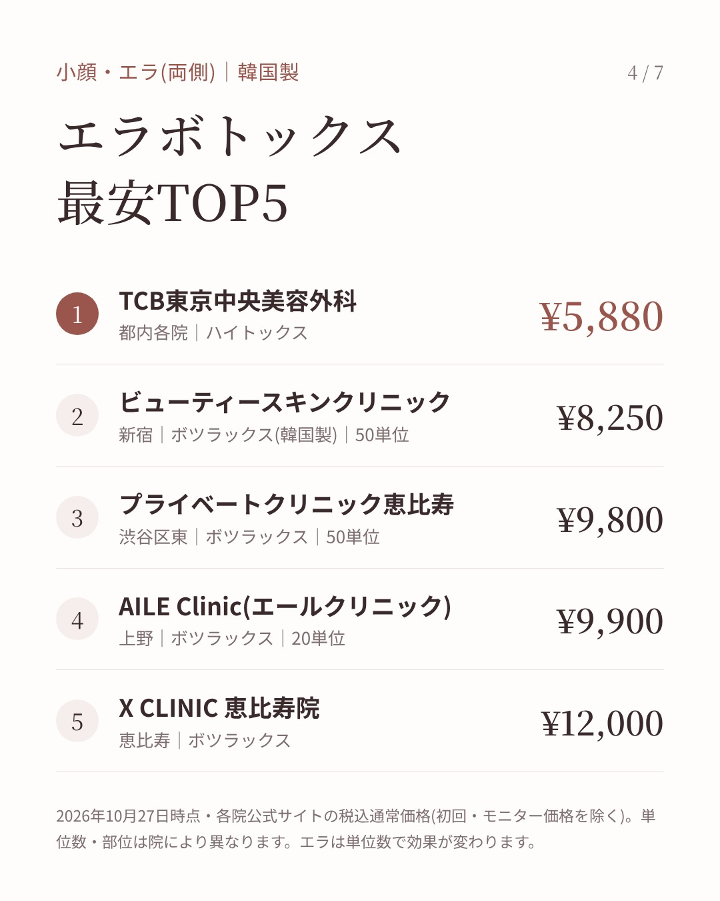
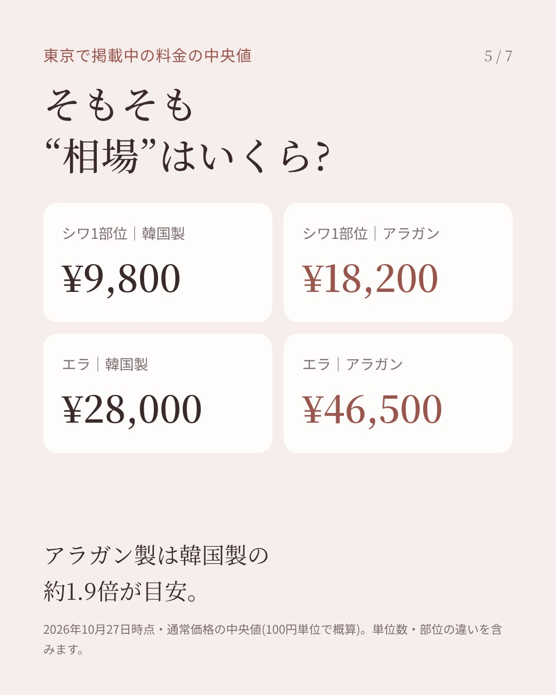
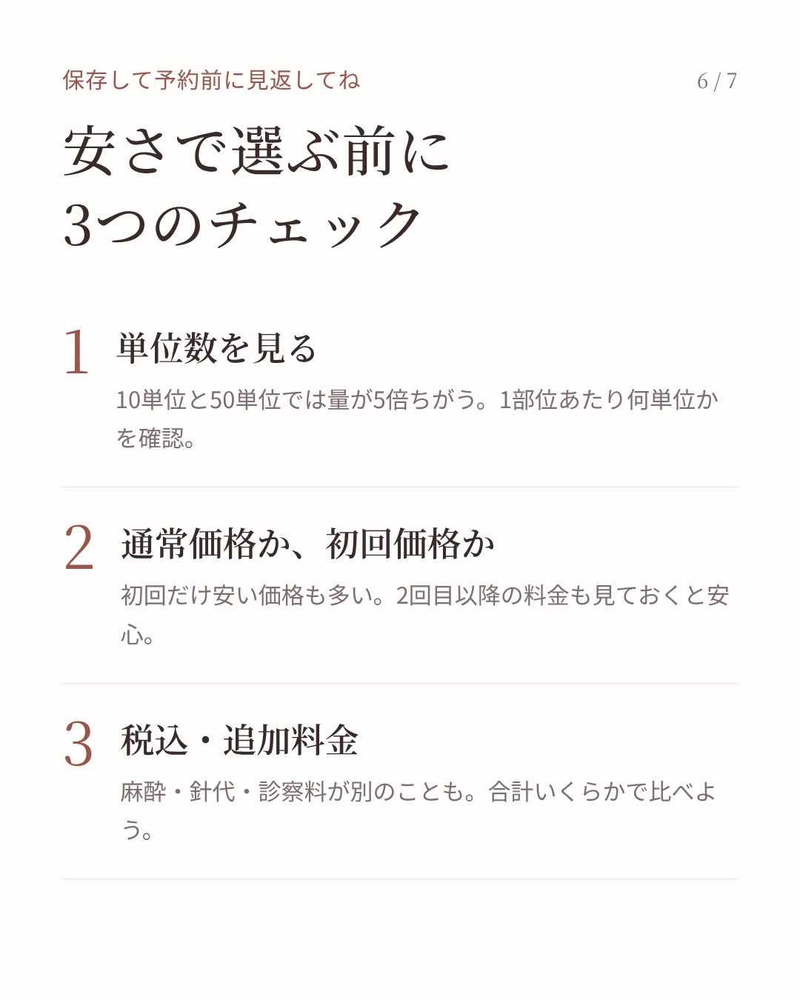
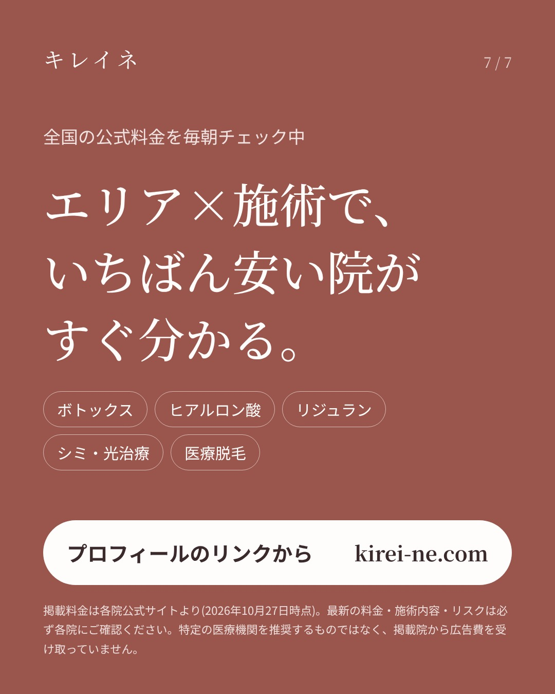

【保存版】東京でボトックスが安いクリニックTOP5 各クリニックの公式サイトに載っている料金だけで比較しました。 ✔ 韓国製・アラガン製・エラ別ランキング ✔ 東京の“相場”もチェック ✔ 安さで選ぶ前の3つのポイント 予約前に保存して見返してね。 エリア×施術の料金比較はプロフィールのリンク(kirei-ne.com)から。 ※2026年10月27日時点の税込通常価格。最新情報は各院にご確認ください。広告費は受け取っていません。 #ボトックス #エラボトックス #美容皮膚科 #東京美容 #美容医療 #ボトックス注射 #小顔 #美容垢